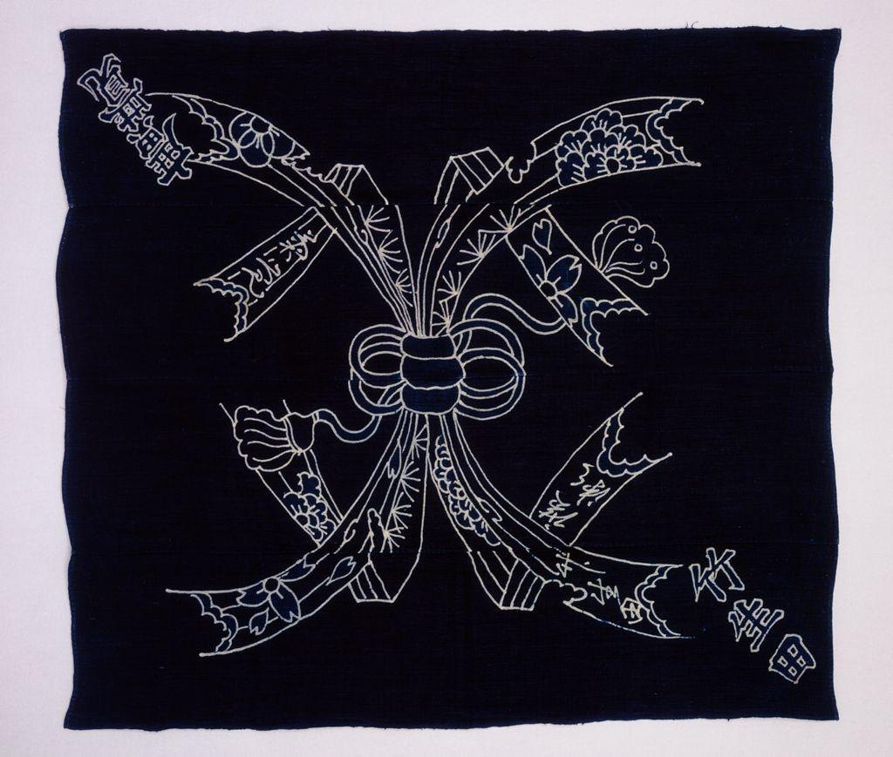
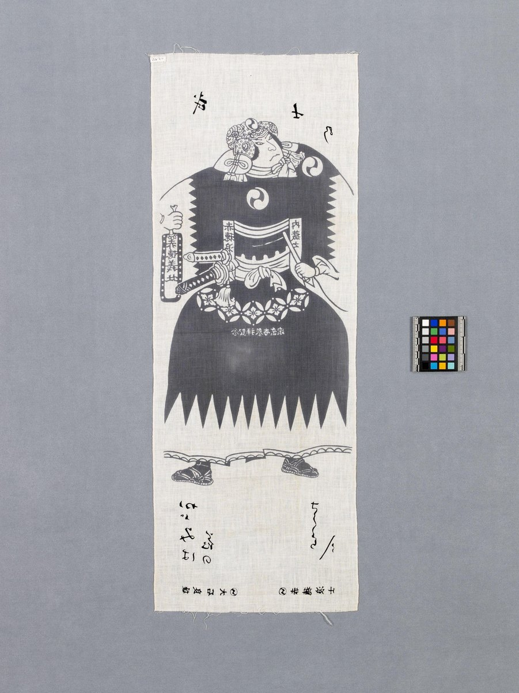
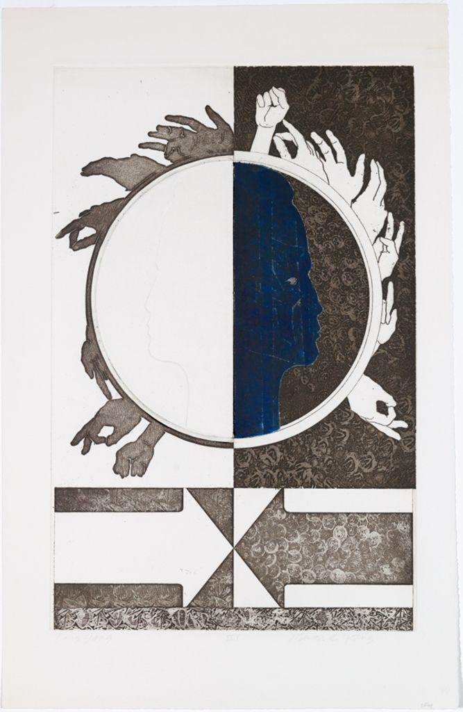
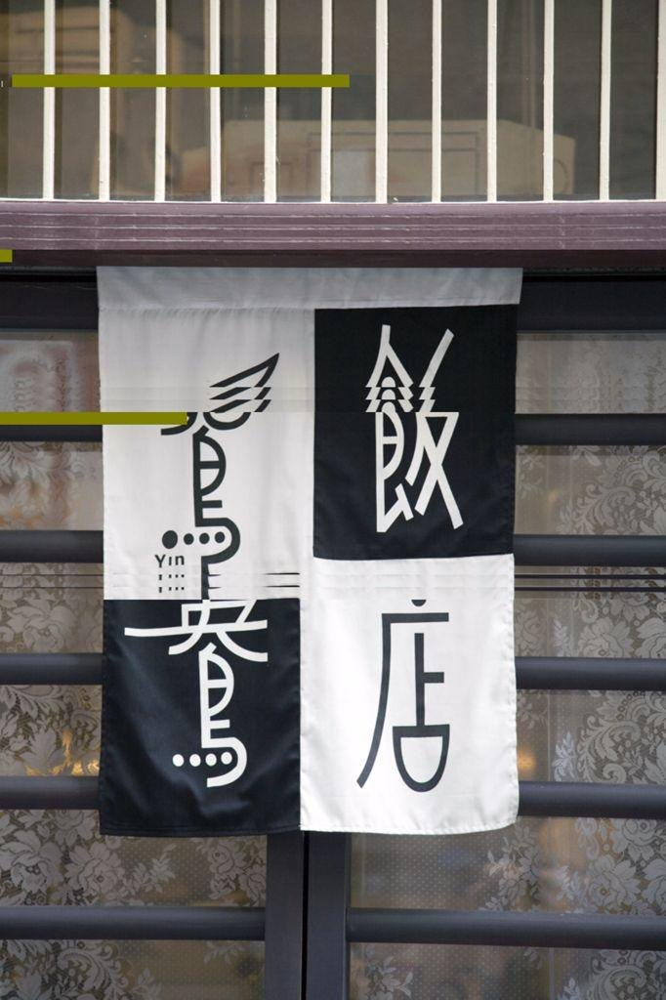

Before we name anything, just look. Spend a full minute with the woodblock print below. Let your eye travel from the wave, to the boats, to the sky, and back.

This is one of the most reproduced images on earth, and the reason is not just the wave. Look at how much of the print is empty. The pale sky takes up the whole top. Three long boats sit low, almost swallowed. Far off and tiny, the snowy peak of Mount Fuji holds still while the water rears up around it. The full areas and the empty areas are working together.
Every one of those answers depends on the empty areas as much as the full ones. That is the lesson hiding in plain sight. Now let us name it.
More works to study




The element at work here is space: the area within, around, and between the things in a picture. Artists split space into two jobs.
Figure and ground
The thing your eye reads as the object is the figure. The surface it sits on is the ground. Usually they stay put: figure in front, ground behind. But a designer can build an image where they trade places, so the empty area suddenly reads as a shape of its own. A famous example is the vase-or-faces trick: the same set of edges reads as a single vase in the center when you see the dark as the figure, and as two faces in profile when you see the light as the figure. Your eye can switch back and forth, but it cannot hold both at once.
When the negative space stops being a background and becomes its own readable shape, designers say the negative space is "active." A logo that hides an arrow in the gap between two letters is doing exactly this: the empty space between the shapes is carrying a message of its own.
A real symbol built the very same way
The figure-ground flip above is a classroom trick. This next image is a real, ancient one that people have carried and worn for thousands of years, built on the identical idea, and taken a step further.


This is not a piece of clip art. It is the Taijitu, the Yin-Yang symbol, one of the oldest and most recognized figure-ground designs in the world. Notice two things. First, the black half and the white half are exactly equal in area: perfect positive/negative balance, the same balance you are learning to build in your own notan work. Second, look closer: a small dot of white sits inside the black half, and a small dot of black sits inside the white half. Each side carries a seed of its opposite. That is figure-ground pushed one step further than the vase-or-faces trick above: here, positive and negative are not just balanced, they are shown to depend on each other.
Notan: the harmony of light and dark
Notan is a Japanese word for the balance and interplay of light and dark in a design. The idea is that the light masses and the dark masses are partners. Neither one is just filler for the other. A strong notan reads clearly even shrunk to a thumbnail, because the light and dark shapes are arranged on purpose. A notan study uses two values only, black and white, with no gray, no shading, and no color. The whole design lives in how the black shapes and the white shapes fit against each other, each one sharing the work evenly.
Notan is not only for paper: pattern in Japanese textiles
Hokusai's generation of print designers did not invent the idea of balancing full areas against empty ones. Japanese textile makers of the same Edo period built the identical balance into cloth, arranging a dyed pattern (the positive space) against the plain silk ground (the negative space) so that a whole robe reads clearly at a glance, the same way a strong print does.

The maker of this kosode is not recorded by name, which is typical of textile work from this period; it is attributed to the culture and period, Edo-period Japan, rather than to an individual. Notice how the dyed pattern is concentrated in certain areas and left open in others, exactly the positive/negative decision you are practicing this week, just worked in cloth and dye instead of ink and paper.
Critics read art in a deliberate order so that judgment is earned, not blurted. The four steps spell DAIJ: Describe, Analyze, Interpret, Judge. Watch them applied to Hokusai's Great Wave, with our eye on positive and negative space. You will run the same steps in your VR critique this week, on a print you choose yourself.
Describe (just the facts)
A huge blue wave curls from the left, its foam breaking into clawed fingers. Three narrow boats full of rowers sit in the troughs below. In the distance, small and pale, rises the snow-capped cone of Mount Fuji. The upper third is empty sky.
Analyze (how is it built?)
The wave and boats are the positive space, dense and busy. The sky is the negative space, wide and quiet, and it makes the wave feel even larger by contrast. Hokusai sets the small triangle of Fuji against the large curl of the wave, so the empty distance and the crowded foreground balance. The light foam and the dark troughs trade across the print, a clear notan of just a few values.
Interpret (what is it saying?)
The emptiness reads as the vast indifference of the sea and sky. The tiny boats and the distant mountain feel fragile inside all that open space. The negative space is doing the emotional work.
Judge (does it succeed?)
It succeeds completely. With a handful of shapes and a great deal of well-managed empty space, Hokusai built an image the whole world recognizes. The space is not background. It is half the picture.
▶ Try it in your notebook: name one place in the Great Wave where the negative space becomes its own shape, then reveal a check.
Empty space is never empty. The light areas and the dark areas of a design carry equal weight, and arranging them on purpose is the whole game. Hokusai used a wide quiet sky to make one wave feel like the ocean. A Yin-Yang symbol and a dyed silk robe show the same idea holding true far outside the print shop. This week, you will cut and flip your own balance of light and dark.